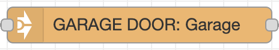
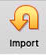
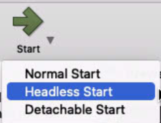
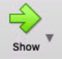
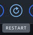
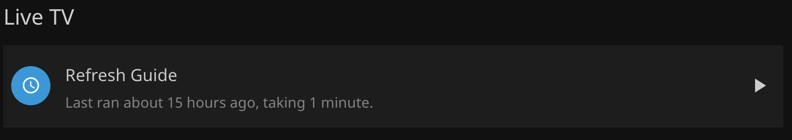
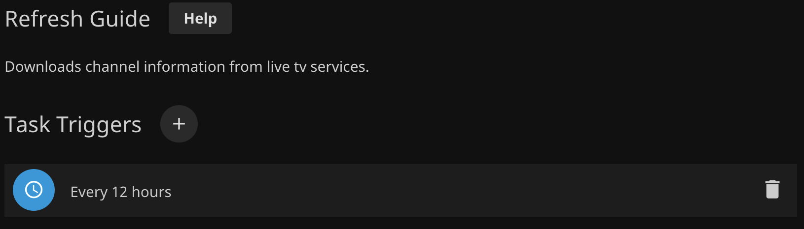

MacServer Documentation
| Copyright | Attributions |
Welcome to MacServer Documentation
This wiki contains documentation on how MacServer is set up and used.
Setup ↵
First Time Setup
Setup Assistant
Mac mini Essentials Documentation - Set up your Mac
The first time your Mac mini starts up, Setup Assistant walks you through the simple steps needed to start using your new Mac. You can respond to all the prompts, or skip some steps and choose to complete them later.
Follow the steps in Setup Assistant, including internet connection, Apple ID sign-in, etc.
Keep unnecesary features turned off (screen time, Apple Pay, Store Files in iCloud, restore from backup, etc)
Users
When first setting up the Mac, create a generic “MacMini” (or whatever type of Mac) admin user. Take note of the password chosen.
This user will be logged in and serving apps/content.
Network
The Mac needs to have a Static IP address for many purposes.
- Find the Ethernet Mac Address under Apple Menu (hold Option) -> System Information -> Network
- Open the eero app
- Go to Settings -> Network Settings -> Reservations and Port Forwarding
- Pick 'Add a reservation'
- Scroll to the bottom of the list, and choose 'Enter manually'
-
Enter an IP Address to use. For convienence, use a low-number IP address (192.168.4.2)
The IP address spreified must not be already in use, and must be within the subnet range.
Keep the first three groups of numbers the same, and only change the last group. (eg 192.168.4.##)
-
Enter the MAC Address noted previously from System Information, using format
XX:XX:XX:XX:XX:XX - Click 'Save'
- Reboot Mac, and ensure that IP address listed in System Preferences is 192.168.4.2
If the IP address does not take effect:
- Reboot the mac again -- it may need to re-handshake with the network
- Forget the network and re-join
- Reboot the eero network from the eero app
Once to the desktop...
- Create Shared Folders
/Users/Shared/Scans/Users/Shared/AllShare/Users/Shared/xmltvdata(used for TV Guide Data Docker Container)/Users/Shared/nodered_data(used for Node-RED Docker Container)
- Create other users:
- andrew
- matt
- dan
- nancy
- If installed, add Jellyfin to System Prefrences -> Users and Groups -> macmini -> Login Items and [CHECK] Hide
- Turn off Wifi from the menu bar
Ventura First Time Setup
- setup mac with macmini user
- set static IP
- Add file shares
- Install chrome
- Set up Time Machine and Time Machine Editor
- install JellyFin using Jellyfin Docs
- Install PiHole using PiHole Docs
- Install Homebridge using Homebridge Docs
macOS Settings
Make these changes in macOS System Preferences
Users and Groups
Login Options
Enable automatic login for the MacMini user
macmini -> Login Items
Automatically start apps on MacMini user login
- Docker
- Jellyfin
Energy Saver
- Turn Display Off after: never
: testing setting this to 3 minutes
- [CHECK] Prevent your Mac from automatically sleeping when the display is off
- [CHECK] Put hard disks to sleep when possible
- [CHECK] Wake for network access
- [CHECK] Start up automatically after a power failure
- [CHECK] Enable Power Nap
Schedule:
- Set to restart on Sundays at 4 AM
Change in macOS Ventura
macOS has changed the way power schedule is set in macOS Ventura. See updated documentation here
Security and Privacy
Privacy -> Full Disk Access
- Ensure
/bin/bashis added to this list
Sharing
Ensure 'Computer Name' is set to MacServer
File Sharing
Add folders:
- /Users/Shared/macOS Server Shares/AllShare
- /Users/Shared/macOS Server Shares/Scans
Add volumes:
- /Volumes/Media
- /Volumes/Time Machine Backups
Enable Time Machine Backups:
- Right Click
Time Machine Backups-> Advanced Options -> [CHECK] Share as a Time Machine backup destination


Permissions:
For all folders and volumes:
- ‘Everyone’: Read Only
- 'AllLocalUsers': Read & Write
Remote Login
- [CHECK] Allow full disk access for remote users
- Allow access for: Only these users ->
AllLocalUsers
Remote Management
- Allow access for:
Only these users-> click '+' and add all users. - When prompted for permissions, enable everything.
- Computer Settings:
- [CHECK] Always show Remote Management status in menu bar
- [CHECK] Anyone may request permission to control screen
Remote Apple Events
- Allow access for:
All users
Content Caching
- Cache:
All content - Options
- Cache Location:
Macintosh HD - Cache size:
30 GB(change as needed)
- Cache Location:
Jumpcloud
WIP
Apple Remote Desktop
Info
Once initial setup is completed with a keyboard, mouse, and display directly connected to the Mac, Remote Desktop can be used to remotely control the Mac when there are no peripherals attatched.
To add MacServer to Apple Remote Desktop:
On the client machine:
- Download ARD from Mac App Store
- Go through initial setup
- Once to the main screen, select 'Scanner' from the left hand side
- Ensure 'Bonjour' is selected on top bar, and drag 'MacServer' into 'All Computers'
- Enter the
macminiuser and password - Once 'Current Status' changes to 'Available', click 'Control' or choose Interact -> Control from the menu bar.
Installs
Install these things.
Brew
In a terminal, run:
/bin/bash -c "$(curl -fsSL https://raw.githubusercontent.com/Homebrew/install/HEAD/install.sh)"
Python
In a terminal, run:
brew install python3
Apps
- VSCode
Ended: Setup
Server Apps ↵
macOS Server
Warning
As of April 21, 2022, Apple has discontinued macOS Server. Existing macOS Server customers can continue to download and use the app with macOS Monterey.
Many of the features of macos Server are already available built-in to macOS, and many features of macOS Server are not used in this MacServer environment.
For more details see https://support.apple.com/en-us/HT208312
Download macOS Server from the App Store
Users
Create users within macOS Server app for Dan/Nancy/Matt/Andrew
Groups
Create a User Group AllLocalUsers with all local users
Docker
Info
Docker is used to create Containers.
"A Docker container image is a lightweight, standalone, executable package of software that includes everything needed to run an application: code, runtime, system tools, system libraries and settings." (docker.com)
Download and install Docker from https://www.docker.com/
Once installed, Open Settings and:
- General
- Check 'Start Docker Desktop when you log in'
- Uncheck 'Open Docker Dashboard at startup'
- Resources -> Advanced
- CPUs: 2
- Memory: 2.00 GB
- Swap: 1 GB
- Disk image size: 16 GB
- Resources -> File Sharing
- Delete any existing file shares, and add:
/Users/Shared/nodered_data/Users/Shared/xmltvdata
TeamViewer
Info
Teamviewer is used for Remote Desktop access to the computer off-network.
Install TeamViewer from https://www.teamviewer.com/en-us/download/mac-os/
Login with account
Enable unattended access:
- [CHECK] Start TeamViewer with System
- [CHECK] Grant Andrew Breyen Easy Access
Jellyfin
Info
Jellyfin is used to serve media content, manage and record live TV content, and more.
Download
Download the latest version of installer/jellyfin_x.x.x.dmgfrom https://repo.jellyfin.org/releases/server/macos/versions/stable/installer/
Open downloaded file, drag Jellyfin to Applications folder
Add to Login Items
Add Jellyfin to Login Items
macOS System Settings -> General -> Login Items
{kind=link}
{kind=link}
Open Web UI
Click the
icon in the menu bar and choose 'Launch Web UI'

{kind=link}
Setup Jellyfin
- Default settings
- Create a primary Admin user
Configure Libraries
-
Click "Add Media Library"

-
Choose "Content Type" -> content type of your folder (likely 'Movies' or 'Shows')
- Click +
- Add the folder that contains the specified Content Type files
- Repeat for other libraries
{kind=link}
Live TV Configuration
(click to expand)
Static IP address:
-
Find HDHomeRun MAC address at http://hdhomerun.local/system.html.
Info
If this URL is not working, first locate the IP address of HDHomeRun on modem Web UI at http://192.168.0.1/modemstatus_landevicelist.html and use the IP Address instead of
hdhomerun.local -
In modem settings -> Advanced Setup -> DHCP Reservation:
Enter (or choose) the MAC address and set a static IP (whatever IP was already set on the HDHR system menu web page)
Setup Live TV
Follow the "Manual Setup" directions located at: https://jellyfin.org/docs/general/server/live-tv/setup-guide.html
To find the IP address of the HDHomeRun, go to the web UI at http://hdhomerun.local/system.html
Once setup, change recording paths in Dashboard -> DVR. Change these to folders on the external hard drive. If you wish to separate Movies and Shows, set a recording path. If you wish to group them all together, just specify a default recording path.
Add Guide Data
-
Create an account at https://tvlistings.zap2it.com/
Warning
Ensure that the password you use here is not used for ANYTHING else.
This password will be stored as a command line parameter in the Docker container.
-
Create a folder on the Mac:
/Users/Shared/xmltvdata -
Install Docker Desktop
- Settings -> General -> Start Docker Desktop when you log in
- Settings -> Resources -> File Sharing: Remove existing mounts and add /Users/Shared/xmltvdata
-
Create a Docker container for the Zap2XML Docker Container
- Open Docker Desktop app
- Run terminal command: replace
your_zap2it_email@email.comandyour_zap2it_passwordwith your https://tvlistings.zap2it.com/ account details.
docker run --restart=always -d --name zap2xml -v /Users/Shared/xmltvdata:/data -e USERNAME=your_zap2it_email@email.com -e PASSWORD=your_zap2it_password -e OPT_ARGS="-I -D -Z 55303" -e XMLTV_FILENAME=xmltv.xml shuaiscott/zap2xmlBy default, new guide data will be fetched by this Docker container every 12 hours. Additional command line arguments can be added/changed. See details on GitHub - shuaiscott/zap2xml README.
Info
If troubleshooting is required, and the container needs to be added again, ensure the container and images are deleted before recreating using
docker runcommand -
Open the container
- Cick on on
zap2xmlfrom the 'Containers' view - Click
Logs - Let the Container run. When complete, a status message will print like this:
Downloaded 1090062 bytes in 291 http requests using 2 sockets. Writing XML file: /data/xmltv.xml Completed in 167s (Parse: 164s) 81 stations, 7895 programs, 17063 scheduled. Last run time: Fri Mar 11 04:12:49 UTC 2022 Will run in 43200 seconds - Cick on on
-
Verify File
In macOS Finder, verify that a xmltv.xml file was created at location
/Users/Shared/xmltvdata. File should start with something like:<?xml version="1.0" encoding="UTF-8"?> <!DOCTYPE tv SYSTEM "xmltv.dtd"> <tv source-info-url="http://tvlistings.zap2it.com/" source-info-name="zap2it.com" generator-info-name="zap2xml" generator-info-url="zap2xml@gmail.com"> <channel id="I2.1.21634.zap2it.com"> <display-name>2.1 KTCADT</display-name> <display-name>2.1</display-name> <display-name>KTCADT</display-name> <icon src="https://zap2it.tmsimg.com/h3/NowShowing/21634/s32356_h3_aa.png" />Scroll down past the
<channel></channel>sections, and verify that there are</programme></programme>tags, with contents similar to<programme start="20220311023000 +0000" stop="20220311040000 +0000" channel="I2.1.21634.zap2it.com"> <title lang="en">Endeavour: The Evolution</title> <desc lang="en">A look at how …..</desc> <category lang="en">Documentary</category> <category lang="en">Special</category> <length units="minutes">90</length> <icon src="https://zap2it.tmsimg.com/assets/p21373423_b_v13_aa.jpg" /> <url>https://tvlistings.zap2it.com//overview.html?programSeriesId=SH04161006&tmsId=SH041610060000</url> <episode-num system="dd_progid">SH04161006.0000</episode-num> <previously-shown /> <subtitles type="teletext" /> </programme> -
Once the file looks correct, it can be added into Jellyfin.
Add the created file to Jellyfin from Administration Dashboard -> Live TV -> TV Guide Data Providers -> XMLTV
See details on Adding Guide Data - Setup Guide | Documentation - Jellyfin Project
Post Processing
Jellyfin supports Post Processing of recorded Live TV shows. This can be used to transcode the recording to a specific format that does not require transcoding on the fly when playing back, extract subtitles, remove commercials, and more.
More details on post processing is available on Live TV Post Processing | Documentation - Jellyfin Project
Prerequisites
Install using Brew:
- Python
- Python3
- Pip
- Pip3
- ffmpeg if using Slack notifications: slack_sdk
Create Scripts
-
Create Folders:
/Users/Shared/Scripts/Users/Shared/Scripts/logs
-
Create Files:
/Users/Shared/Scripts/run_post_processor.sh/Users/Shared/Scripts/record_post_process.py
-
Edit Scripts: Use VSCode or another code editor to add code into these scripts.
Copy and paste from GitHub links:
In
run_post_processor.sh:- Change logging directory to /Users/Shared/Scripts
- Change Python path to the result of
which python3 - Change path of
record_post_process.pyto/Users/Shared/Scripts/record_post_process.py
In
record_post_process.py:- Change logging directory to
/Users/Shared/Scripts/logs - Add Slack token
- If desired, change deleting non-transcoded file to keep original file and move
-
Make shell script executable -- run in a terminal:
chmod +x /Users/Shared/Scripts/run_post_processor.sh
Add to Jellyfin
-
In Jellyfin Dashboard/DVR/Recording Post Processing settings:
-
Set "Post-processing application" to your shell script which calls your actual post processor (details of this 'actual' post processor script below). In this example, that would be
/Users/Shared/Scripts/run_post_processor.sh -
Set "Post-processor command line arguments" to
"{path}"
Test Python Script
-
Record a show from the Jellyfin Web UI (this recording can be just a few seconds long)
-
Troubleshoot by viewing logs at
/Users/Shared/Scripts/logs/*.
Homebridge
Info
Homebridge is used for Home Controls of Plugs, Garage Door.
Install locally
Follow instrictions on the README of the Homebridge Repo
Once installed, and hb-service has been ran:
In the Web UI:
- Click "Get Started"
- Create an admin user and specify password
- Click "Open Dashboard"
Install plugins
Homebridge Tuya Platform https://github.com/tuya/tuya-homebridge
Configure Homebridge Tuya Platform plugin
- Name: TuyaPlatform
- Username: andrew.breyen@gmail.com
- Password: [REDACTED] -- password of Tuya account
- Access ID: [REDACTED]
- Access Key: [REDACTED]
- Language Code: en
- Project Type: PaaS
- PaaS Platform: Smart Life
- Country Code: 1
Setup and Configure
Once the Homebridge Tuya Platform plugin is added, click the power icon on the top right to restart
Once back up, click Accessories and verify that all accessories have been added
Scan QR code from Status screen using Home App -> Add Accessories
Add the bridge to room ZAccessories, continue setup within Home app, place accessories into correct rooms
Scrypted
Info
Scrypted is used to serve Video Camera Content to Apple Home.
Install locally
https://github.com/koush/scrypted/wiki/Installation:-Mac
Install plugins
- HomeKit
- RTSP Camera Plugin
- Rebroadcast Plugin
Configure plugins
RTSP cameras
- Add 2 cameras (Front Porch, Backyard), username: wyzecam, Password: wyzecam, Snapshot URL: [blank], RTSP Stream URL: rtsp://wyzecam:wyzecam@[IP ADDR OF CAMERA]/live
Homekit
- View console of plugin to see QR code, add accessory via iOS Home app.
- Add the bridge to room ‘ZAccessories’, continue setup within Home app, place accessories into correct rooms
Additional plugins used by Scrypted
OpenCV: https://opencv.org/
Used to detect motion and send homekit notifications
Node-RED
Info
Node-RED is used to control automations that require more settings/control than HomeKit or HomeBridge can provide natively.
Node-RED is a programming tool for wiring together hardware devices, APIs and online services in new and interesting ways.
It provides a browser-based editor that makes it easy to wire together flows using the wide range of nodes in the palette that can be deployed to its runtime in a single-click."
Installation
Prerequisites:
-
npm installed
-
Open a terminal and run
sudo npm install -g --unsafe-perm node-red - Once you see a message from the terminal similar to
Node-RED has been successfully installed!
Welcome to Node-RED =================== 2 Oct 23:26:06 - [info] Node-RED version: v3.0.2 2 Oct 23:26:06 - [info] Node.js version: v16.16.0 ... 2 Oct 23:26:07 - [info] Started flows - Exit Node-RED by pressing Ctrl + C (will be restarted later using pm2 to run in the background)
More information available at: https://nodered.org/docs/getting-started/local
Enabling Node-RED to start on computer boot
- Install PM2: In a terminal, run:
sudo npm install -g pm2 - Determine the exact location of the
node-redcommand: runwhich node-redin a terminal - Tell PM2 to run Node-Red: run
pm2 start /path/to/node-red -- -vin a terminal, replacing/path/to/node-redwith the result ofwhich node-redfrom above - Temm PM2 to run on boot: Run these commands in a terminal, and follow the instructions provided
pm2 savepm2 startup- Reboot the machine, and verify that PM2 has started NodeRED
More information: https://nodered.org/docs/faq/starting-node-red-on-boot
Additional Palette items
Once Node-RED is running and you can access via a web browser, install these additional items by clicking the three lines hamburger button in the top right, and selecting ‘Manage Palette’, then move to the ‘Install’ tab
- node-red
- node-red-contrib-cron
- node-red-contrib-homebridge-automation
Note
Ensure the correct Palette item is chosen -- there are two versions available

- node-red-contrib-slack-files
- node-red-contrib-stoptimer
Importing Flows
- Go to https://github.com/AndrewBreyen/Node-RED-flows/ and pick which flow you want to start importing
- Copy the contents of desired flows’ (use the
 button for ease of use)
button for ease of use) - Click the three lines hamburger button in the top right, and selecting ‘Import’
- Paste in value copied to clipboard
- Go to https://api.slack.com/apps/A03JPNEBPC4/incoming-webhooks to retrieve the Webhook URL, copy to clipboard
- Double click on the
 node(s)
node(s) - Paste in the Webhook URL copied to clipboard
- Double click on the  and
 nodes, ensure that the correct device and Homebridge Pin are selected
nodes, ensure that the correct device and Homebridge Pin are selected - Repeat with the other flows you want to import
- Test it out!
{kind=link}
Pihole
Info
Pihole is used as a network wide Ad blocker using DNS.
Note
There are two ways to install PiHole.
- If installing from scratch, go to Set Up From Scratch section
- If installing from a precreated .OVA Virtual Machine file, go to the Set Up From Virtual Machine File section
Set Up From Scratch
Note
Use these directions if setting up from scratch
Create a VM using VirtualBox.
See Create VM for details.
Install PiHole
- RUN in terminal of PiHole VM:
More details on installation can be found at https://github.com/pi-hole/pi-hole/#curl--ssl-httpsinstallpi-holenet--bash
curl -sSL https://install.pi-hole.net | bash - When you get to the blue "GUI" screen:
- Majorly accept default settings. Read through and change as you wish.
- When prompted for 'Upstream DNS Provider;, select which one you want. They all pretty much do the same thing. Recommendation: OpenDNS
- Install the suggested block lists (usually 'StevenBlack's Unified Hosts List' is the default)
- Install the Admin Web Interface, lighttpd and required PHP modules
- Enable Query logging if you wish
- Once installation is complete, note the 'Admin Webpage Login Password' -- The password cannot be retrieved later on, but it is possible to set a new password (or explicitly disable the password by setting an empty password)
Finalize Setup
Regardless if setting up PiHole from scratch, or from a Virtual Machine File, some final configuration/verification is required.
Continue to Set the VM to auto-launch in headless mode on Mac login
Set Up From Virtual Machine File
Note
Use these directions if setting up PiHole from a Virtual Machine .OVA file
Virtualbox Installation and Importing Applicance
- Download and install Virtualbox from https://www.virtualbox.org
-
Download OVA file from OneDrive
(Access to this link is restricted -- please confirm if you have access)
-
Open Virtualbox and click 'Import' 
- Click the folder icon next to the 'File' box and pick the .OVA file
- Click 'Continue'
- Appliance Settings: Change 'MAC Address Policy' to Include all network adapter MAC addresses. Leave all other settings the same. Click 'Import'
{kind=link}
Verify Settings
- Once the Applicance is imported, verify that the settings match the ones outlined above
- Ensure the correct IP address is reserved in the eero app. Details outlined above
Start Up
- Start VM in headless mode (click arrow next to start -> headless mode)
 - Click 'Show'
{kind=link}
Verify Connectivity
-
Verify internet connectivity by entering command
ping google.com. If you see a response similar to:the VM can reach the internet.64 bytes from 142.250.191.238: icmp_seq=93 ttl=57 time=42.931 msPress Ctrl + C to exit.
-
Verify IP Address by entering command
ip addr. Look at the result for theinet 192.168.4.xline. It should be the IP address specified in the eero reservation.1: lo: <LOOPBACK,UP,LOWER_UP> mtu 65536 qdisc noqueue state UNKNOWN group default qlen 1000 .... 2: enp0s3: <BROADCAST,MULTICAST,UP,LOWER_UP> mtu 1500 qdisc fq_codel state UP group default qlen 1000 link/ether 08:00:27:1a:f8:19 brd ff:ff:ff:ff:ff:ff inet 192.168.4.4/22 metric 100 brd 192.168.7.255 scope global dynamic enp0s3 valid_lft 14039sec preferred_lft 14039sec ....
Finalize Setup
Regardless if setting up PiHole from scratch, or from a Virtual Machine File, some final configuration/verification is required.
Continue to Set the VM to auto-launch in headless mode on Mac login
Set the VM to auto-launch in headless mode on Mac login
Download the script vboxlaunchagent.sh from https://www.whatroute.net/software/vboxlaunchagent.sh.zip
Move the downloaded file somewhere convenient, like the Desktop.
whatroute.net
LaunchAgents are configured with an Apple plist XML file installed in the users Library/LaunchAgents folder. When the user logs in to their account on the Mac, launchd will inspect these plist files and invoke the required program with specified arguments.
It can get a bit tricky to create a plist manually. They have very fussy and very unforgiving syntax requirements. This shell script will create the plist and install it in the LaunchAgents directory.
You can download the script from vboxlaunchagent.sh. Unzip the file and copy the script to a suitable directory on your machine.
Run the script using this syntax:
-
Find the name of the VM: In a terminal on MacServer directly (not the VM), run:
VBoxManage list vmsShould result in output similar to:
macmini@macserver ~ % VBoxManage list vms "Pihole" {c7ac734f-3fc7-4645-997b-3c78ef32d8f4}In this example, Pihole is the name of the VM.
-
In a terminal, run
replacingsh path/to/vboxlaunchagent.sh --headless --verbose "VMName"VMNamewith the name of the VM from the previous step, and/path/to/vboxlaunchagent.shwith the full path (likely will be~/Downloads/vboxlaunchagent.shif you just clicked the link above) -
Ensure that the output is similar to
VirtualBox VM found. . . : PiHole Created temporary file . : /tmp/org.virtualbox.launch.PiHole Created Launch Agent . . : /Users/macmini/Library/LaunchAgents/org.virtualbox.launch.PiHole.plist -
Reboot the Mac and ensure the VM auto-starts on login
(Script and explanation from https://www.whatroute.net/installerapp2iso.html)
Configure PiHole
- Remove or change admin web page password: RUN in terminal of PiHole VM:
sudo pihole -a -p - Open the Web UI (http://your.static.ip.address/admin)
- Configure as you wish
Set DHCP Server
- Open the eero app
- Go to Settings -> Network Settings -> DNS
- Set to 'Custom'
- Set 'IPv4 Primary' to the static IP address of PiHole
- Set 'IPv4 Secondary' to a backup DNS provider to use.
Available Providers
Usually it's a good idea to use the same DNS provider that you selected during PiHole setup. However, this is not required.
Some available providers:
- OpenDNS: 208.67.222.222
- Google: 8.8.8.8
- CloudFlare: 1.1.1.1
Warning
You can choose to not supply a secondary provider to force PiHole to be used exclusively.
However, if a secondary DNS provider is not set, if PiHole is down or unavailable to reqpond to queries, DNS queries will not be able to be resolved, resulting in no internet access.
 Once the DNS server is set, Congrats! Pihole is now in use for all devices on the network.
You can test PiHole by visiting a website that previously had ads, they should be blocked now :)
Once the DNS server is set, Congrats! Pihole is now in use for all devices on the network.
You can test PiHole by visiting a website that previously had ads, they should be blocked now :)
Troubleshooting Sites not Loading
Pihole is a tracking and ad-blocker. Because of this, some sites may not load, or be missing content.
Temporarily Disable Pihole
If this is a one-off thing that you need to load, you can temporarily disable Pihole across the whole network.
- Open the PiHole Web UI
- Click 'Disable'
- Choose an amount of time to disable. 5 minutes is usually sufficent.
PiHole is now disabled, and will be automatically re-enabled once the time elapses.
Add a site to the whitelist
- Open the PiHole Web UI
- Click 'Whitelist'
-
Type the domain where you are encountering issues in the 'Domain' field.
Add any comments as needed
-
Check the 'Add domain as wildcard' box
- Click 'Add to Whitelist'
Use the Audit Log
Audit Log will show the top allowed and blocked queries with quick access to blacklist or whitelist them
- Open the PiHole Web UI
- Click 'Tools' -> 'Audit Log'
Updating Pihole (Pihole and underlying Ubuntu OS)
If you see red text at the bottom of the PiHole web UI ‘Update Available’, it needs an update. This is currently a manual process, work in progress to automate it. There are two options, both do exactly the same thing. The SSH option may be easier.
Via SSH
Pihole Updates
-
Open a Terminal and enter command:
ssh pihole@pi.hole
If you get a message similar to:
The authenticity of host 'pi.hole (192.168.0.4)' can't be established. ED25519 key fingerprint is SHA256:jWxxjslC9ObhMty4d0UNERghKP6UWmetfEj80CKW6QY. This host key is known by the following other names/addresses: ~/.ssh/known_hosts:8: 192.168.0.4 Are you sure you want to continue connecting (yes/no/[fingerprint])?This is likely because you have not connected to the PiHole VM using SSH previously, and your computer cannot verify the authenticity of the server computer.
Verify the IP address is what you expect (in this example,
192.168.0.4) and if it’s correct, typeyesat the prompt.After you have sone this once, you likely will not have to do it again, unless the fingerprint key changes.
-
At the prompt
pihole@pi.hole's password:enter the PiHole user password. Once successfully connected, you should see a prompt similar topihole@pihole:~$. You are now SSHed into the PiHole VM! -
Run command
pihole -up - If prompted
[sudo] password for pihole:enter the PiHole user password - Wait for it to update. On success, you should see
[✓] Everything is up to date!
Ubuntu Updates
It’s also a good idea to update the underlying Ubuntu instance periodically, especially if there is a notice then you logged into the Pihole VM similar to:
91 updates can be applied immediately.
9 of these updates are standard security updates.
To do this:
- Run
sudo apt upgrade -
You may be prompted:
Enter YAfter this operation, 430 MB of additional disk space will be used. Do you want to continue? [Y/n] -
Wait for it to update. This may take a while, depending on the number of updates.
Via Apple Remote Desktop
Pihole Updates
- Open Apple Remote Desktop
- Select
MacServerfrom All Computers - Click on
Controlor from the taskbar, or chooseInteract > Control - A new window will open with the MacServer display.
- From the Dock, Applications Folder or Spotlight, open
VirtualBox - Ensure
Piholeis selected in the sidebar

- Click
Show - A new window will open with the PiHole VM.
- In that new window, ensure you have a
pihole@pihole:~$prompt. If you do not, press Enter a few times to get to a new line. - Run command
pihole -up - If prompted
[sudo] password for pihole:enter the PiHole user password - Wait for it to update. On success, you should see
[✓] Everything is up to date!
{kind=link}
Ubuntu Updates
It’s also a good idea to update the underlying Ubuntu instance periodically, especially if there is a notice then you logged into the Pihole VM similar to:
91 updates can be applied immediately.
9 of these updates are standard security updates.
To do this:
- Run
sudo apt upgrade -
You may be prompted:
Enter YAfter this operation, 430 MB of additional disk space will be used. Do you want to continue? [Y/n] -
Wait for it to update. This may take a while, depending on the number of updates.
Tdarr
Info
Tdarr is used to transcode media files to a preferred format.
Tdarr is not currently implemented.
Download
- Download Tdarr_Updater from https://docs.tdarr.io/docs/installation/windows-linux-macos
- Unzip downloaded file
- Run
chmod +x /path/to/Tdarr_Updaterin a terminal - Run
/path/to/Tdarr_Updater
Time Machine Editor
Info
Time Machine Editor is used to modify the backup frequency of Time Machine Backups
This allows for space savings, as hourly snapshots are not saved, as well as performance benefits as a backup is not being created hourly.
Hourly backups are likely overkill for MacServer, so this is changed using Time Machine Editor.
Download and install from https://tclementdev.com/timemachineeditor/
Open the installed application from the Applications Folder and change backup frequency.
Currently, this is set to backup on an interval of every 1 day.
{kind=link}
To allow these settings to take effect, instead of the default macOS settings, ensure that 'Back Up Automatically' checkbox in System Prefrences -> Time Machine is disabled.
{kind=link}
Ended: Server Apps
Hardware ↵
Hardware
Mac
- Mac mini (2018)
- Processor: 3.6 GHz Quad-Core Intel Core i3
- Memory: 8 GB 2667 MHz DDR4
- Graphics: Intel UHD Graphics 630 1536 MB
Smart Devices
- ConBee II The Universal Zigbee USB Gateway
Zigbee-Conbee
Info
Install deCONZ on a Pi
Installing Conbee on Pi
- Download the latest SD Card image of the
Raspbian Buster Headlessversion from https://www.phoscon.de/en/conbee2/sdcard - Flash SD Card using Balena Etcher
- Plug Pi into eero
- Find IP address of Pi using eero app
Ended: Hardware
Troubleshooting ↵
Reboot
Info
Most issues can be solved by rebooting the Mac.
If configured correctly, the mac should auto-login and all services should auto-start upon boot.
To reboot the machine, there are a couple different ways:
Apple Remote Desktop (ARD)
- Open ARD
- Select ‘MacServer’ in the list
- Choose Manage -> Restart
- Select ‘Users lose unsaved changes’
- Click Restart
- After the Mac has restarted, ‘Current Status’ should change to ‘Available’.
- Verify that the Mac has all services back up and running -- they should all start automatically after a reboot
SSH
Use Terminal on a Mac, or “Termius” iOS app
-
Connect to MacServer over ssh:
-
In a terminal:
ssh macmini@macserver.localYou may recieve a message similar to
The authenticity of host 'macserver.local (192.168.0.2)' can't be established. ED25519 key fingerprint is SHA256:f5c24jmfOO7dvFsdfsdf33SDFyzV1paytRg. This key is not known by any other names Are you sure you want to continue connecting (yes/no/[fingerprint])?This is likely because you have not connected to MacServer using SSH previously, and your computer cannot verify the authenticity of the server computer.
Verify the IP address is what you expect (in this example,
192.168.0.2) and if it’s correct, typeyesat the prompt.After you have sone this once, you likely will not have ot do it again, unless the fingerprint key changes.
-
At prompt:
(macmini@macserver.local) Password:enter MacMini user password (no characters will be shown when typed) - Connection success if prompt changes to
macserver:~ macmini$
-
-
Enter
at the promptsudo shutdown -r now - Enter
macminiuser password - Final shutdown message will be shown:
Shutdown NOW! *** FINAL System shutdown message from macmini@macserver.local *** System going down IMMEDIATELY System shutdown time has arrived Connection to macserver.local closed by remote host. Connection to macserver.local closed. - Connection should be closed automatically, verify that MacServer comes back up.
Live TV Guide Data not up to date
Use Remote Desktop to connect to the computer:
- Open Apple Remote Desktop (ARD)
- Select ‘MacServer’ in the list
-
Choose Interact -> Control
-
Ensure that the Docker Container is healthy and running
-
Open Docker Desktop Dashboard by cliching the whale/container ship icon in the taskbar and choosing 'Dashboard'
- Click on 'zap2xml'
-
Ensure there are logs either being streamed:
or you see the completed message:
Downloaded 1090062 bytes in 291 http requests using 2 sockets. Writing XML file: /data/xmltv.xml Completed in 167s (Parse: 164s) 81 stations, 7895 programs, 17063 scheduled. Last run time: Fri Mar 11 04:12:49 UTC 2022 Will run in 43200 seconds -
Restart the container
 - If the container will not run, delete and recreate the Container per Live TV Configuration setup instructions
{kind=link}
{kind=link}
{kind=link}
If container is setup, running, and healthy:
-
Open the file
/Users/Shared/xmltvdata/xmltv.xmlwith a text editor (preferrably Atom or Visual Studio Code) and see if the file has up to date data.- Find the start of the
<programme></programme>block (around line 500), and see that it has data similar toNote the<programme start="YYYYMMDD090000 +0000" stop="YYYYMMDD100000 +0000" channel="I2.1.21634.zap2it.com">YYYMMDDinstart=andstop=, these should be todays date (or very close to it)
- Find the start of the
-
If the file does have up to date data but Jellyfin does not have updated data: Open Jellyfin Admin Dashboard (web console) -> Live TV and ensure file is listed under
TV Guide Data Providers

-
If the file is listed: Ensure that the Scheduled Task Live TV / Refresh Guide has run recently, and is scheduled to run every 12 hours
 
{kind=link}
{kind=link}
Smart Devices showing as “No Response”/Orange Exclamation mark in Apple Home

This is usually caused by your device, not MacServer. Try rebooting your device.
If it still shows an issue, check that HomeBridge/Scrypted are online and aren’t throwing any errors.
If issues persist, Reboot MacServer
Network Change: Smart Home Devices
Info
When the network is changed, some devices aren't smart enough to automatically reconnect to the new network.
To fix this, the devices need to be re-connected to the network.
Smart Plugs/Garage Door
- Verify that accessories are offline.
- These devices should be blinking blue or red, and show offline in the Smart Life app
- Press and hold the button till the device blinks quickly. Wait a few seconds after blinking quickly, then press and hold the button till it blinks slowly. (AP Mode)
- Follow the instructions in Smart Life app to add a new device.
- Ensure that HomeBridge can control the newly added accessory. This may require removing cached accessories (three dots -> Homebridge Settings -> Remove All Cached Accessories)
Cameras/Wyze Hub
-
Verify that cameras are offline.
- The cameras should be blinking blue and red, the hub should be quickly blinking blue, and show offline in the Wyze app
-
Follow instructions to add new camera/hub in Wyze app
- The devices should respect their IP address reservations. Double check the IP of the device.
If there are connection issues, temporarily disable 5GHz through the eero app (Settings -> Troubleshooting -> My device won't connect)
macOS Ventura Update: Issues and Solutions
Info
macOS Ventura is Apple's latest macOS Operating System.
This page details issues encountered, and how to solve them
Virtualbox Aborted with Exit Code 1
Error Text:
Failed to open a session for the virtual machine PiHole.
The virtual machine 'PiHole' has terminated unexpectedly during startup with exit code 1 (0x1).
Result Code: NS_ERROR_FAILURE (0x80004005)
Component: MachineWrap
Solution 1: VirtualBox 7 was recently released (Oct 10, updated Oct 20), which is MUCH better than version 6
Download latest version from https://www.virtualbox.org/wiki/Downloads
Use the uninstaller first, then install version 7.
The PiHole VM may need to be re-added. Attempt to re-add. If issues persist, try solution 2.
Solution 2:
- Open Terminal
- Enter commands:
sudo su csrutil clear reboot - Verify if the issue persists by attempting to re-start the VM in headless mode. If it does not, stop troubleshooting. Otherwise, continue.
- Download the latest release from https://www.virtualbox.org/wiki/Downloads and use
VirtualBox_Uninstall.toolto un-install VirtualBox - Reboot
- Re-install Virtualbox using the downloaded installer.
- If prompted, go to System Preferences - Privacy - General and accept the extensions
- If the PiHole VM is no longer listed in VirtualBox, re-add PiHole Virtual Machine
PiHole.vboxfile using the 'Add' button in VirtualBox - Reboot
Reference: Apple Stack Exchange
Full Disk Access/Privacy/Other Permissions
macOS Ventura seems to use a different scheme for Privacy, and some apps may not be updated for it.
If required, remove permissions that are requested.
If issues persist, uninstall and reinstall the app.
Scheduled Reboot
In macOS Ventura, the way you schedule your Mac to shut down or reboot has changed.
In previous versions of macOS, setting an automated schedule like this was easy. You simply had to navigate to the Energy Saver/Battery panel in System Preferences and set a custom schedule using the interface options. For macOS Ventura, however, in replacing System Preferences with System Settings, Apple decided to remove these options from the graphical interface completely.
How to schedule a reboot on Sunday at 4 AM:
- Open Terminal
- Run command:
sudo pmset repeat restart U 04:00:00 - Enter password if requested
- Verify schedule by running command:
pmset -g sched
To clear the current Power Management schedule, run command:
sudo pmset repeat cancel
Reference: How to Schedule Shut Down, Restart, and Boot/Wake in macOS Ventura: MacRumors